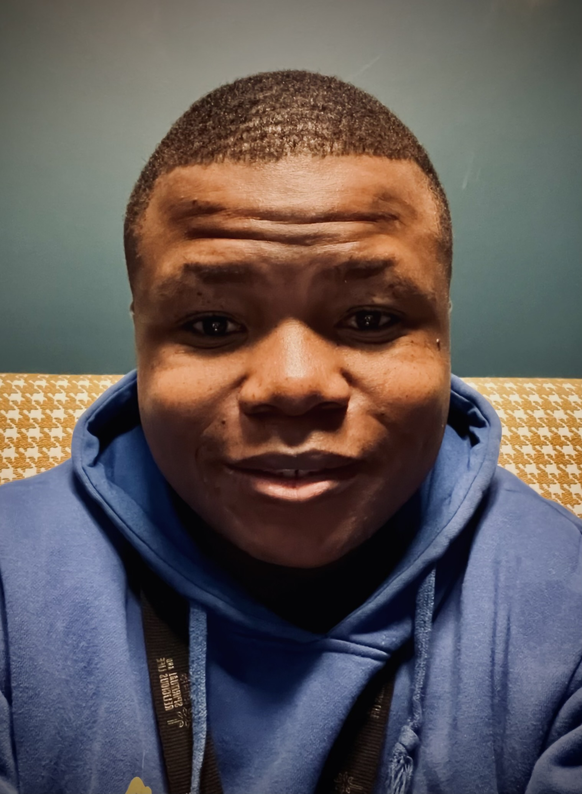

Moses Banda
linkedin profile | git hub profile |
+1 615-484-2651
Summary
I am a creative and passsionate indivdual with self-taught coding skills
Education
- Vanderbilt University, Expected: May 2028
- Bachelor of Science, Computer Science
Professional experience
Vanderbilt English Language Center | Summer Intern | May 2025 - present
- Tracked inventory of over 2,000 books using Excel, alleviating 115+ duplicates and missing copies.
- Ensured a warm welcoming of 5+ daily guest while performing weekly 10 hours desk shifts.
- Suggested effective data organizationn methods using microsoft List, sharepoint e.t.c in bimonthly meetings.
Kappa Theta Pi | Delta Class | February 2025 - present
- Debugged the first 115 arduino code lines for an NPK sensor, ensurig it measures up to 200mg/kof a farmer's soil.
- Engineered GPT-4/Flask API to classify waste and cut disposal errors by 40% across 10+ items.
- Worked in a team of 7 to rebuild the fratenity website in js, HTML,and CSS over a course of 5 weeks.
TME Robotics Africa
- Developed an analog alarm sytem with LCD count down in Arduino language for potential use in the country's rural outskits.
- Analyzed proximity sensors in a 2 - person team using an assembled robotics car to practicalize an accident-proof automobile.
- Selected as on of the 14 bootcamp schoilars, reprensting the top 13% of of the 100+ applicants.
Skills
- Programming Languages: intermediate Java, intermediate HTML, Arduino prgramming Language, basic JavaScript
- Tools: Git, Excel, SharePoint, Microsoft Lists
- Soft Skills: Teamwork, Problem-solving, Communication
- Hobbies,
contact information